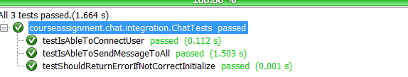
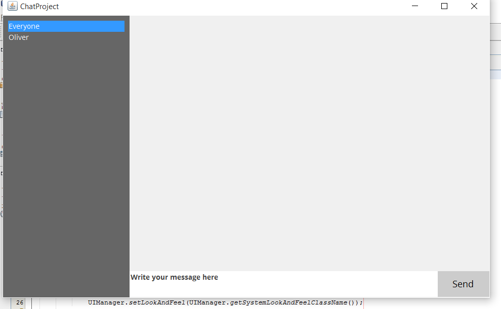

Documentation
This is the documentation for the application. The code can be found here https://github.com/TryingToImprove/ChatApplication
Clients
The clients implements Closeable which means the clients must be closed.
To create a new client simply java library to your project and instantiate a new ChatClient with the server address and port, and call connect()
try(ChatClient client = new ChatClient("localhost", 9090)) { client.connect(); }
Adding observers
To make your UI handle incoming messages from the client you need to add a observer to your ChatClient
The observer must implements java.Observer
client.addObserver(new MyCustomObserver());
The returned arg is of type ChatResponse
Sending protocol messages
When a client is connected it is possible to send messages. The client follow the specified protocol, and the first messages is required to be a USER#{username} message
client.send(message)
Server
The server will handle all the connected users and message.
To create a server simply add the java library to your project and instantie a new ChatServer with the server address and port and call start()
ChatServer server = new ChatServer("localhost", 9090); server.start()
The start() will be a blocking call!
Starting the server from the JAR
You can start the server from the JAR file by executing following command in cmd
java -cp CouseAssignment.Chat.Server.jar Server 6060 localhost
Protocol
Both the server and client follows the protocol specified, which makes it possible to initialize a connection, message to every connected user or to a set of users
Connecting
The first message sent to the server is the username of the connected user.
REQUEST: USER#{username}
RESPONSE: USERLIST#{username1},{username2}..
Sending messages
It is possible to send messages to a set of connected users or to everyone.
Every recipient of the message will get the response
Send to everyone
REQUEST: MSG#*#{message}
RESPONSE: MSG#{senderUsername}#{message}
Send to single or a set of users
REQUEST: MSG#{username1},{username2}#{message}
RESPONSE: MSG#{senderUsername}#{message}
ChatResponse
Every time the observers are notified they will get a ChatResponse, which have 2 methods.
getCommand()
getCommand() returns the type of the command the observer should handle. Can be USERLIST or MSG
getParameter(String parameterName)
According to the command there is different parameters
USERLIST
users returns an String[] with the connected users
MSG
recipients returns an String[] with the recipents, if message is sent to everyone this will be null
message returns an String with the message
Test
All tests passed, but it was hard to tests the connections and threads, because some connections was still receiving USERLIST# when some already had got the MSG#
About the application
The chat applications listens to responses from the ChatClient which then can update the GUI.
When a new user connects the entire userlist updates with the newest users. Because of the list works in the server, the users will always be at the same index and therefor it will work
Sending messages
The userlist is a clickable/selectable list, which the users selected will be the one who get the messages. You can also choose "Everyone" which sends the message to everyone